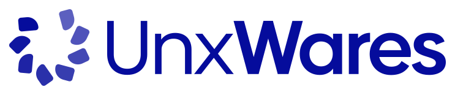

bind9
2026.11.3ISC Bind9 9.20 · UnxWares images
A flexible and production-ready Helm chart for running ISC Bind9 DNS server on Kubernetes.
No critical or high vulnerability

Helm charts maintained by UnxWares, tested on every change, with their images scanned every 6 hours.
helm repo add unxwares https://helm.unxwares.studio/Each chart with the latest result of its tests on main and the vulnerabilities of the images it deploys by default. A mark links to the run that produced it.
ISC Bind9 9.20 · UnxWares images
A flexible and production-ready Helm chart for running ISC Bind9 DNS server on Kubernetes.
No critical or high vulnerability
Cloudreve 4.19.1 · UnxWares images
Self-hosted file management and sharing system (Cloudreve v4), supports multiple storage providers.
No critical or high vulnerability
ExcaliDash 0.6.7
A helm chart for ExcaliDash, A self-hosted dashboard and organizer for Excalidraw with live collaboration features
No critical or high vulnerability
FossFLOW 1.0.5 · UnxWares images
FossFLOW, an open source web app to draw isometric infrastructure diagrams, with optional server-side storage of the diagrams.
No critical or high vulnerability
Kener 4.1.11
Kener 4 status page with SQLite/PostgreSQL/MySQL, a bundled hardened Valkey for its queues, and secure defaults for Kubernetes.
13 high vulnerabilities (fix available upstream)
Laravel (generic) 12.x
Run your own Laravel application image on Kubernetes (FrankenPHP, or PHP-FPM with an nginx sidecar) with queue workers, scheduler, migrations and hardened defaults.
No critical or high vulnerability
OpenEverest Database Tools 1.17.0 · UnxWares images
Jobs that wait for an OpenEverest DatabaseCluster to be ready, then create PostgreSQL, MySQL and MongoDB databases, users, grants and run init scripts.
3 high vulnerabilities (fix available upstream)
PowerDNS 5.1.5 · UnxWares images
PowerDNS Authoritative Server with its REST API, SQLite/PostgreSQL/MySQL backends and an optional PowerDNS Recursor, hardened for Kubernetes.
No critical or high vulnerability
Taiga 6.10.2 · UnxWares images
Taiga, the open-source agile project management platform (backend, async workers, events, front, protected media, bundled PostgreSQL and RabbitMQ), hardened for Kubernetes.
1 critical, 3 high vulnerabilities (no fix yet, or not reachable)
passedfailedno such test yet
Where an official image lags behind, the charts default to our own build, published on ghcr.io/unxwares, rebuilt twice a week and scanned every 6 hours (CVE watch). Both are scanned with Trivy: the official image on the left, our build on the right.
Latest scan: . The next one within 6 hours.
Known critical and high vulnerabilities, summed over the 9 images scanned on both sides by the latest CVE watch.
| Image | Official image | UnxWares build |
|---|---|---|
postgres17.11-alpine |
1 critical25 high61 known in totaldocker.io/library/postgres:17.11-alpine | 0 critical0 high0 known in total |
postgres18.6-alpine |
Scanned at the next CVE watchdocker.io/library/postgres:18.6-alpine | Scanned at the next CVE watch |
taiga-back6.10.2 |
11 critical181 high546 known in totaldocker.io/taigaio/taiga-back:6.10.2 | 1 critical3 high15 known in total · 4 accepted, with the reason |
taiga-events6.10.0 |
3 critical35 high90 known in totaldocker.io/taigaio/taiga-events:6.10.0 | 0 critical0 high0 known in total |
taiga-front6.10.3 |
4 critical27 high120 known in totaldocker.io/taigaio/taiga-front:6.10.3 | 0 critical0 high0 known in total |
taiga-protected6.10.1 |
3 critical108 high427 known in totaldocker.io/taigaio/taiga-protected:6.10.1 | 0 critical0 high0 known in total |
pdns-auth5.1.5 |
8 critical165 high574 known in totaldocker.io/powerdns/pdns-auth-51:5.1.5 | 0 critical0 high0 known in total |
pdns-recursor5.4.9 |
0 critical70 high377 known in totaldocker.io/powerdns/pdns-recursor-54:5.4.9 | 0 critical0 high0 known in total |
postgresql-client18 |
Scanned at the next CVE watchdocker.io/library/postgres:18-alpine | 0 critical0 high0 known in total |
mysql-client8.4 |
Scanned at the next CVE watchdocker.io/library/mysql:8.4 | 0 critical0 high0 known in total |
mongosh2.14.1 |
Scanned at the next CVE watchdocker.io/library/mongo:8.0 | 0 critical1 high47 known in total · 1 accepted, with the reason |
cloudreve4.19.1 |
15 critical216 high547 known in totaldocker.io/cloudreve/cloudreve:4.19.1 | 0 critical0 high3 known in total |
fossflow1.0.5 |
0 critical14 high40 known in totaldocker.io/abrar74774/fossflow:master-2b3cee3 | 0 critical0 high1 known in total |
bind-exporter0.8.0-62-gbafd56f |
Scanned at the next CVE watchdocker.io/prometheuscommunity/bind-exporter:master | 0 critical0 high1 known in total |
Signed with the UnxWares Helm Charts key, fingerprint 7902 E52E A435 EF27 C643 2E53 78D6 B532 C599 DA9B.
curl -fsSL https://helm.unxwares.studio/pgp-public-key.asc | gpg --import
gpg --export 7902E52EA435EF27C6432E5378D6B532C599DA9B > ~/.gnupg/unxwares-helm.gpg
helm install my-release unxwares/<chart> --verify \
--keyring ~/.gnupg/unxwares-helm.gpgEvery published image is signed with cosign, keyless, by the image workflow.
cosign verify ghcr.io/unxwares/taiga-back:6.10.2 \
--certificate-identity 'https://github.com/UnxWares/helm/.github/workflows/images.yaml@refs/heads/main' \
--certificate-oidc-issuer https://token.actions.githubusercontent.comResults of . status.json · index.yaml · CVE watch · Security policy